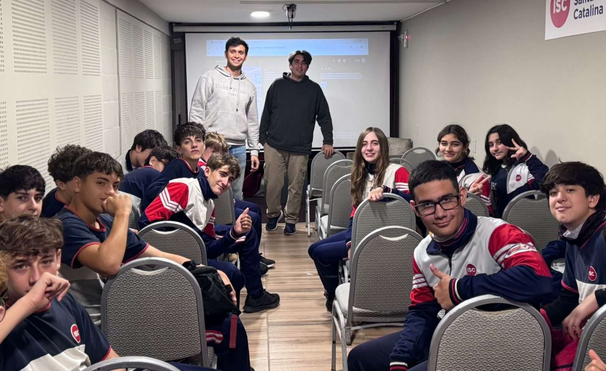

.jpg)
BIENVENIDOS A CONT.IA

LA WEB QUE TE INFORMA SOBRE INTELIGENCIA ARTIFICIAL

La Inteligencia Artificial (IA) es una de las tecnologías más importantes y transformadoras del siglo XXI. Su desarrollo ha modificado profundamente la manera en que las personas trabajan, se comunican, estudian, consumen información y toman decisiones. Aunque muchas veces se la asocia con robots o sistemas futuristas, la IA ya forma parte de la vida cotidiana de millones de personas a través de aplicaciones, buscadores de internet, redes sociales, asistentes virtuales, plataformas de entretenimiento y herramientas de trabajo.
La inteligencia artificial puede definirse como el conjunto de tecnologías y sistemas informáticos diseñados para realizar tareas que normalmente requieren inteligencia humana, tales como aprender, razonar, reconocer patrones, comprender lenguaje, resolver problemas o tomar decisiones. Su crecimiento acelerado en las últimas décadas ha generado grandes beneficios para la sociedad, pero también ha abierto debates relacionados con la ética, la privacidad, el empleo y la dependencia tecnológica.
La Inteligencia Artificial no es solo ficción; se basa en algoritmos complejos que analizan grandes volúmenes de datos. A través del aprendizaje automático, los sistemas aprenden a resolver problemas sin ser programados explícitamente para cada paso. Está presente hoy en aplicaciones cotidianas que simplifican nuestra interacción con el entorno digital. La IA ya es parte de nuestra automatización cotidiana a través de herramientas que usamos sin darnos cuenta. Desde los asistentes que gestionan nuestra agenda hasta las recomendaciones en plataformas digitales, la tecnología simplifica tareas complejas.
La empresa estadounidense de inteligencia artificial Anthropic anunció que suspendió el acceso a la versión más potente de su tecnología en cumplimiento de una orden del gobierno de EE.UU

Desde su fundación en los albores de la era atómica, la UNESCO ha ayudado a las sociedades a orientarse y gestionar el poder transformador de la tecnología, en beneficio de todas las personas.

Como parte del Proyecto CLIP, el Gobierno provincial capacitó a más de 20 estudiantes del nivel Secundario en procesos de creación de avatares mediante inteligencia artificial y su aplicación en redes sociales.
Leer más